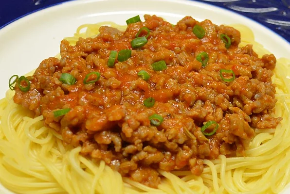

Spaghetti

Description
The following is a recipe for making spaghetti, an Italian recipe famous all over the world.
Ingredients
- 1 pound spaghetti
- 2 pounds lean ground beef
- 1 onion, minced
- 1 (6 ounce) can tomato paste
- 2 (10.75 ounce) cans condensed tomato soup
- 2 1/2 cups water
Steps:
- Bring a large pot of lightly salted water to boil.
- Add pasta and cook for 8-10 minutes or until al dente; drain.
- In a large skillet over medium heat, cook ground beef with onion until meat is brown.
- Drain.
- Return meat mixture to pan with tomato paste, tomato soupd and water.
- Cook, stirring, until heated through and thickened, 5-10 minutes.
- Serve over cooked pasta.